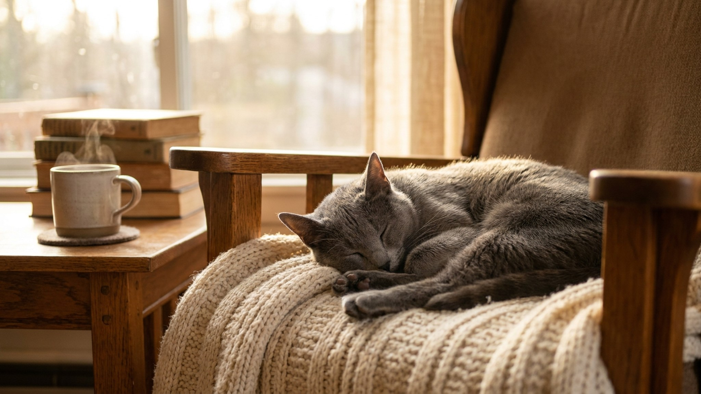

Гости приходят — кошка исчезает. Не потому что боится, а потому что так решила. Русская голубая выбирает одного человека и выстраивает с ним глубокую связь, а весь остальной шум — не её история. Если вы понимаете эту логику, жизнь с русской голубой будет одной из самых насыщенных кошачьих историй. Если нет — ни вам, ни кошке легко не будет.
🐾 Здоровье питомца под контролем
AI-ветеринар, дневник здоровья и персональные советы для вашего питомца — установите AnimaLife бесплатно.
Русская голубая не просто предпочитает одного хозяина — она на него ориентируется. Именно с ним кошка ищет контакт, следует по квартире, устраивается рядом вечером. С остальными членами семьи держится нейтрально, с чужими — дистанцированно. Это не высокомерие и не страх. Это структура привязанности породы: интенсивная, но направленная.
Если вы тот самый человек — получаете кошку, которая реально за вами скучает. Если вы купили русскую голубую для ребёнка или «для всей семьи», приготовьтесь: кошка сама выберет, кто «её», и остальным придётся с этим смириться.
Русская голубая — порода с высокой чувствительностью к обстановке. Громкие голоса, незнакомые запахи, нарушенный распорядок — всё это стресс, а не вредность. Типичная картина: пришли гости, кошка ушла в спальню и провела там весь вечер. Через час после ухода гостей — вернулась, как ни в чём не бывало.
Что здесь важно знать:
Русская голубая плохо переносит хаос: переезды, перестановки мебели, смену распорядка, долгое отсутствие хозяина. Эта порода нуждается в предсказуемости среды так же, как другие — в активных играх. Кормление, сон, игра в одно и то же время — это не избалованность, это стабильность, которая держит кошку в равновесии.
Практика: если переезд неизбежен — сначала обустройте одну комнату с её привычными запахами, лежанкой и мисками. Дайте неделю осваиваться там, потом открывайте остальное пространство постепенно.
Русская голубая хорошо впишется в жизнь, если:
Лучше рассмотреть другую породу, если в доме постоянный шум, маленькие дети с непредсказуемым поведением, много меняющихся гостей или вы хотите кошку, которая одинаково тепло принимает всех. Русская голубая не закроет эту потребность — и сама будет в хроническом стрессе.
🐾 Первая помощь — всегда под рукой
AnimaLife подскажет, что делать в тревожной ситуации с питомцем ещё до визита к врачу. Откройте в один тап.
🐾 Понравился разбор?
Подпишитесь на канал — каждый день разбираем по одному тревожному симптому у кошек и собак: что в пределах нормы, а когда пора к врачу. Подпишитесь, чтобы не пропустить разбор, который может спасти здоровье вашего питомца.